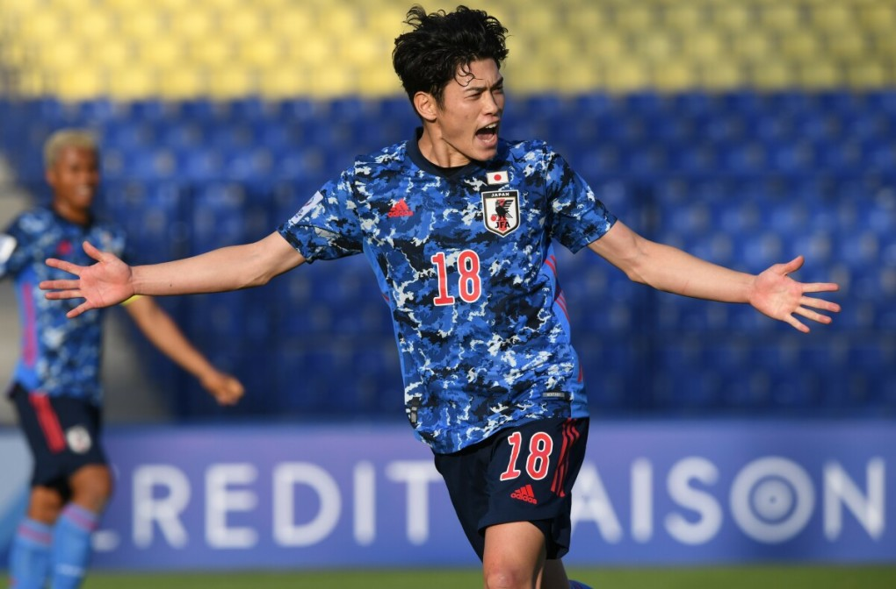

Bán kết U23 châu Á: Cơ hội cho những Samurai trẻ
Lợi thế sân nhà của Uzbekistan không còn nhiều tác dụng sau khi Liên đoàn Bóng đá châu Á cấm các CĐV của họ vào sân ở bán kết. Trận đấu chỉ có khoảng 500 CĐV Nhật Bản góp mặt trên khán đài. Yếu tố chuyên môn vì thế sẽ quyết định phần lớn kết quả trận đấu.

Một nửa trong tám bàn của Nhật Bản từ đầu giải được ghi ở nửa sau hiệp hai. Ảnh: AFC
Nhật Bản trở thành ứng viên vô địch hàng đầu sau khi biến Hàn Quốc thành cựu vương bằng chiến thắng 3-0 ở tứ kết. Với tiêu chí chơi tấn công, HLV Oiwa Go giúp học trò ghi tám bàn, chỉ thủng lưới một lần từ đầu giải. Đội duy nhất cầm chân Nhật Bản là Saudi Arabia, hòa 0-0 ở vòng bảng.
Nhật Bản trở thành ứng viên vô địch hàng đầu sau khi biến Hàn Quốc thành cựu vương bằng chiến thắng 3-0 ở tứ kết. Với tiêu chí chơi tấn công, HLV Oiwa Go giúp học trò ghi tám bàn, chỉ thủng lưới một lần từ đầu giải. Đội duy nhất cầm chân Nhật Bản là Saudi Arabia, hòa 0-0 ở vòng bảng.
Dàn sao U21 của Nhật Bản tỏ ra chững chạc, bản lĩnh trong bốn trận đã đấu. Họ có lúc gặp khó trước UAE ở ngày ra quân, nhưng vẫn thắng 2-1 nhờ hai bàn ghi trong 15 phút giữa hiệp hai. Trong cuộc đấu với Hàn Quốc, các học trò của HLV Go cũng dập tắt hy vọng của đối thủ bằng hai bàn trong 15 phút ở nửa cuối hiệp hai.
Uzbekistan cũng có bảy điểm ở vòng bảng như Nhật Bản. Nhưng, chủ nhà chơi chật vật tại tứ kết với Iraq trong tình cảnh thủ môn Abduvohid Nematov bị đuổi từ hiệp một. Uzbekistan được tiếp lửa rất lớn ở trận này khi 30.000 CĐV của họ liên tục gây áp lực cho trọng tài và đội khách bằng những màn ném vật thể lạ xuống sân. Uzbekistan sau đó vượt qua Iraq ở loạt luân lưu.